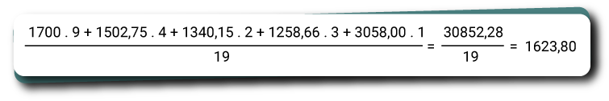

Matemática
Introdução
Olá, estudante do Sesc EAD EJA! Seja bem-vindo à área de matemática e suas tecnologias. Confira agora o que vamos aprender!
Neste terceiro módulo, vamos conhecer um pouco a família brasileira, estudando sua constituição e relacionando-a aos conteúdos estatísticos, como média, moda, mediana, amplitude, desvio e desvio padrão.
Também vamos usar dados levantados com uma pesquisa amostral realizada na cidade de Calculópolis, que conhecemos nos módulos anteriores.
Siga conosco nesta caminhada!
Até a próxima!
A família brasileira
Nos últimos anos, a configuração da família tem se modificado drasticamente, o perfil de família tradicional, que estávamos acostumados a ver nos “comerciais de margarina”, já não são uma boa representação de uma família da atualidade. No mundo, muitas coisas apresentaram inúmeras mudanças ao longo dos anos, e com as famílias não é diferente. A banda Titãs problematizou esse perfil de família em 1986 quando lançou a música “Família”, no álbum “Cabeça Dinossauro”. Confira sua letra a seguir.
Papai, mamãe, titia
Família, família
Almoça junto todo dia
Nunca perde essa mania
Mas quando a filha quer fugir de casa
Precisa descolar um ganha pão
Filha de família se não casa
Papai, mamãe não dão nenhum tostão
[...]
Família, família
Vovô, vovó, sobrinha
Família, família
Janta junto todo dia
Nunca perde essa mania
Mas quando um nenê fica doente
Procura uma farmácia de plantão
O choro do nenê é estridente
Assim não dá pra ver televisão, oh
[...]
Família, família
Cachorro, gato, galinha
Família, família
Vive junto todo dia
Nunca perde essa mania
A mãe morre de medo de barata
O pai vive com medo de ladrão
Jogaram inseticida pela casa
Botaram um cadeado no portão
[...]
Compositores: Tony Bellotto/Arnaldo Antunes
A reportagem da revista Veja, com base em dados do Censo 2010, mostra essa mudança do perfil familiar, que reflete a alteração estrutural das famílias brasileiras. Algumas dessas mudanças são decorrentes de fatores como o desenvolvimento humano, que é medido pelo Índice de Desenvolvimento Humano (IDH), as baixas taxas de fecundidade, que geram a diminuição dos nascimentos, e o envelhecimento da população, já que as taxas de expectativa de vida mostram que os cidadãos estão vivendo cada vez mais. Veja um trecho da reportagem a seguir.
A nova família brasileira
O Censo 2010 detalha a situação dos casais formados por pessoas divorciadas e dos lares em que os filhos são de apenas um dos cônjuges. Mudança na legislação facilitou separações e ajudou a ampliar o conceito de família.
Por Pollyane Lima e Silva e Cecília Ritto, do Rio de Janeiro, 17 out. 2012, 10h03
[…] A composição de casais com filhos ainda representa a maioria das famílias brasileiras, apesar da queda significativa nessa fatia da população: foi registrada redução de 63,6%, em 2000, para 54,9% em 2010.
O Censo também mostra que, apesar de os solteiros ainda responderem por mais de metade da população, 55,3%, entre as pessoas com 10 anos de idade ou mais, foi entre os divorciados o maior aumento observado de uma década para outra: o índice quase dobrou do levantamento feito em 2000 para o atual, passando de 1,7% para 3,1%. Se somados com o número de desquitados e separados judicialmente, esse grupo chega a quase 5% dos brasileiros […].
A família tradicional, representada por mãe, pai e filhos do casal já não contempla a realidade da maior parte dos lares brasileiros. Levando em consideração também a classe social e a localização das moradias dessas famílias, conseguimos perceber as mais diversas configurações familiares.
Pensar nas diversidades, como um todo, torna nossa visão de padronização desnecessária e descabida. Os dados fornecidos pelo IBGE, no Censo em 2010, nos proporcionam entender as diversidades de culturas, classes sociais, grau de instrução, orientação sexual, entre outros inúmeros aspectos que podemos considerar ao projetar um modelo de família. Veja a seguir as configurações familiares mais observadas.
De acordo com dados fornecidos pelo IBGE (Instituto Brasileiro de Geografia e Estatística), levantados pelo Censo de 2010, existem aproximadamente 57 milhões de lares brasileiros.
Clique ou toque no infográfico para ouvir os áudios e obter mais informações.
Infográfico com dados do Brasil. De acordo com o Censo de 2010, há cerca de 57 milhões de lares. Desses, 12,2 por cento são lares unipessoais, 51,2 por cento são de homens morando sozinhos e 48,8 por cento são de mulheres que moram sozinhas. A configuração nuclear dos 57 milhões de lares soma 66,2 por cento, desse percentual, 61,9 por cento são casais com filhos, 20,7 por cento casais sem filhos, 15,1 por cento, mulheres com filhos e 2,3 por cento de homens com filhos. No caso das famílias estendidas, dos 57 milhões de lares, 19 por cento têm essa configuração, onde 43 por cento são de casais com filhos e outros parentes, 26,7 por cento são de mulheres com filhos e outros parentes, 10,9 por cento, casais sem filhos e outros parentes, 3,6 por cento de homens sem filhos e outros parentes e 15,8 por cento de outras configurações. Dos 57 milhões de lares brasileiros, 2,8 por cento recebem o nome de configuração composta, onde desses 2,5 por cento, 30,1 por cento são formados por casais com filhos e com não parentes, 15,8 por cento são formados por mulheres com filhos e com não parentes, 9,9 por cento formados por casais sem filhos com não parentes, 3,5 por cento formados por homens com filhos com não parentes e 40,6 por cento de outras configurações. Sobre os responsáveis pela família, a imagem aponta que 61,3 por cento são responsáveis homens e 38,7 por cento são responsáveis mulheres. Outros casos de responsabilidade: há responsabilidade compartilhada em 29,6 por cento dos lares, casais que trabalham e não têm filhos chamados de “dinks” são 2 milhões e pessoas morando com amigos somam 400 mil. Casais “gays” somam 60 mil lares, onde 46,2 por cento são de homens e 53,8 por cento são de mulheres.
Com o passar dos anos, notamos enormes mudanças na sociedade, afetando campos como política, cultura e economia, entre outros, o que vem modificando o estilo de vida das pessoas e, com isso, reformulando o nosso conceito de família.
Mas o que é “família”?
“Família” é um grupo de pessoas com grau de parentesco ou laços afetivos que vivem na mesma casa, formando um lar. A família é o primeiro modelo de sociedade que temos contato e precisamos, por meio de regras de convivência, aprender a nos relacionar.
Pensando um pouco nas características de uma família, podemos fazer um comparativo, analisando dados dos últimos anos, em que o desenvolvimento das famílias e da sociedade proporcionou melhores condições e direitos para as mulheres, tornando-as, em muitos casos, principais provedoras do sustento familiar. Veja no gráfico a seguir a distribuição percentual das famílias.
Clique ou toque para ampliar.
Fonte: Alves (2022)
A imagem mostra um gráfico de barras verticais e abaixo consta uma tabela descrevendo em percentual a diversificação dos arranjos familiares no Brasil entre os anos de mil novecentos e oitenta e dois mil e dez. No ano de mil novecentos e oitenta os casais com filhos apresentam sessenta e cinco por cento, casais com filhos doze vírgula um por cento, mãe com filhos onze vírgula cinco por cento, pai com filhos zero vírgula oito por cento, mulher só dois vírgula oito por cento, homem só três por cento e outra quatro vírgula oito por cento. No ano de mil novecentos e noventa e um os casais com filhos apresentam sessenta e um vírgula três por cento, casais com filhos doze vírgula três por cento, mãe com filhos doze vírgula nove por cento, pai com filhos um vírgula um por cento, mulher só três vírgula oito por cento, homem só quatro vírgula um por cento e outra quatro vírgula oito por cento. No ano dois mil os casais com filhos apresentam cinquenta e oito vírgula oito por cento, casais com filhos doze vírgula cinco por cento, mãe com filhos quatorze por cento, pai com filhos um vírgula oito por cento, mulher só quatro vírgula cinco por cento, homem só quatro vírgula quatro por cento e outra três vírgula nove por cento. No ano dois mil e dez os casais com filhos apresentam cinquenta e dois vírgula cinco por cento, casais com filhos quinze vírgula um por cento, mãe com filhos quinze vírgula três por cento, pai com filhos dois vírgula dois por cento, mulher só seis vírgula dois por cento, homem só seis vírgula cinco por cento e outra dois vírgula dois por cento.
É interessante, para o poder público, manter as informações populacionais atualizadas, para que possam ser pensadas e repensadas as políticas públicas que tenham por objetivo atender às necessidades da sociedade. Mas, como podemos fazer essa atualização? Como vimos nos módulos anteriores, os meios são a realização de pesquisas amostrais e censitárias. Por exemplo, no ano de 2022, foi realizado o Censo do IBGE. Essa contagem, produzida pela pesquisa do Censo, teve a intenção justamente de fazer uma atualização dos dados dos brasileiros. No dia 30 de agosto de 2022, o IBGE divulgou o primeiro balanço da coleta de dados do Censo demográfico 2022, veja os dados na reportagem a seguir.
Censo 2022 já contou quase 60 milhões de pessoas no país
Editoria: IBGE | Irene Gomes | Arte: Helga Szpiz
30/08/2022 10h00 | Atualizado em 30/08/2022 20h04
O IBGE está divulgando o primeiro balanço da coleta do Censo Demográfico 2022. Desde o início da operação, em 1º de agosto, até ontem (29), foram recenseadas 58.291.842 pessoas, em 20.290.359 domicílios no país. Destas, 36,51% estavam na região Nordeste, 35,51% no Sudeste, 11,87% no Sul, 9,44% no Norte e 6,67% no Centro-Oeste. Na manhã de hoje (30), o total de população recenseada já era de 59.616.994 [...].
Clique ou toque para ampliar.
Fonte: Gomes (2022)
A figura mostra um gráfico de barras horizontais mostrando a porcentagem da população do Brasil por estado que já foi pesquisada no censo de dois mil e vinte e dois, Primeiro balanço da coleta sobre a distribuição da população recenseada por unidade de federação, São Paulo apresenta quinze vírgula cinquenta por cento da população já pesquisada, Minas gerais dez vírgula três, Bahia oito vírgula noventa, Rio de janeiro oito vírgula zero três, Pernambuco seis vírgula trinta , Ceará cinco vírgula treze, Paraná quatro vírgula noventa e dois, Maranhão quatro vírgula oitenta e oito, Pará quatro vírgula quarenta e três, Rio grande do Sul quatro vírgula vinte e oito, Goiás dois vírgula noventa e quatro, Paraíba dois vírgula setenta e um, Santa Catarina dois vírgula sessenta e sete, Amazonas dois vírgula quarenta, Rio grande do Norte dois vírgula trinta e oito, Piauí dois vírgula trinta e quatro, Alagoas dois vírgula dezenove, Distrito Federal um vírgula setenta, Sergipe um vírgula sessenta e oito, Espírito Santo um vírgula sessenta e um, Mato Grosso do Sul um vírgula zero três, Mato Grosso um vírgula zero um, Rondônia zero vírgula oitenta e cinco, Tocantins zero vírgula setenta e seis, Acre zero vírgula quarenta e um, Amapá zero vírgula trinta e sete e Roraima zero vírgula vinte e quatro.
Existem outras formas de levantar esses dados por meio de pesquisas específicas, realizadas em espaços mais singulares, como em uma cidade específica, sendo realizada pela própria prefeitura com o objetivo de contabilizar dados demográficos para depois planejar a oferta de recursos e políticas públicas que contemplem, se não o todo, mas a maior parte da população. Exemplificando um desses levantamentos, vamos analisar a pesquisa feita na cidade de Calculópolis.
Figura 3 - Brasão de Calculópolis
Fonte: Sesc EAD EJA (2023)
Brasão da cidade de Calculópolis que contém no topo um sólido geométrico com vinte faces numeradas. À direita e à esquerda deste sólido são encontradas duas estrelas de cinco pontas. Na região central da imagem, à esquerda, encontram-se representadas as quatro operações de matemática; à direita, encontram-se representados um lápis, uma régua e uma régua na forma de triângulo. Na região central encontram-se dois livros, sendo um deles aberto. Na parte inferior, abaixo dos livros, está representado um rio de Calculópolis. O brasão é envolto por folhas de louro, símbolo do triunfo.
Como vimos nos módulos anteriores, o poder público da cidade de Calculópolis fez um levantamento da quantidade de famílias por bairros e das pessoas que compõem essas famílias, com o objetivo de entender os programas sociais mais necessários por regiões. Na cidade, temos um total de 10 bairros, porém vamos analisar somente o bairro Vila Soma.
Nesse bairro, atualmente residem 86 famílias. Foram coletados os dados de 30 famílias escolhidas aleatoriamente. Você lembra qual é o instrumento utilizado para a coleta desses dados? Os dados foram obtidos a partir da aplicação de um formulário de pesquisa, apresentado no módulo I, com várias perguntas. Uma delas é relacionada com o número de moradores de cada residência. Os dados são apresentados de forma aleatória, a seguir: 3, 5, 6, 9, 4, 5, 3, 4, 3, 4, 3, 3, 6, 3, 2, 6, 3, 4, 2, 6, 4, 3, 3, 3, 5, 5, 3, 7, 4, 9.
A moda, como o próprio nome diz, é um recurso estatístico que visa representar um conjunto de dados pelo(s) valor(es) que mais se repete(m), assim como as tendências de moda. Você já viu na televisão quando uma propaganda fala que uma roupa está na moda?
Quando isso acontece, normalmente, vemos várias pessoas seguindo a tendência, ou seja, usando a peça de roupa citada na propaganda. Da mesma forma, na estatística, consideramos “moda” o valor que mais se repete no conjunto de dados. Para encontrarmos a moda, precisamos, inicialmente, organizar os dados em ordem crescente ou decrescente para uma melhor visualização. Vamos utilizar os dados elencados acima, aleatoriamente, sobre o número de moradores das residências: 3, 5, 6, 9, 4, 5, 3, 4, 3, 4, 3, 3, 6, 3, 2, 6, 3, 4, 2, 6, 4, 3, 3, 3, 5, 5, 3, 7, 2, 4, 9. Logo, vamos organizá-los em ordem crescente (do menor valor ao maior valor): 2, 2, 3, 3, 3, 3, 3, 3, 3, 3, 3, 3, 3, 4, 4, 4, 4, 4, 4, 5, 5, 5, 5, 6, 6, 6, 6, 7, 9, 9.
Observando os dados numéricos dispostos, conseguimos perceber que o valor numérico que mais se repete é o número 3, com 12 repetições. Com essa informação, podemos determinar que a moda desse conjunto de dados é o número 3. A moda é ter 3 moradores por residência. Isso é importante para identificar a quantidade mais frequente de moradores por residência.
Agora, imagine que a pergunta sobre o número de moradores fosse realizada em outras 5 residências e que os dados obtidos fossem: 2, 3, 4, 5, 6. Qual seria a moda? Qual número aparece com maior frequência nessa amostra? Note que todos os números aparecem uma única vez, ou seja, não há números que aparecem com maior frequência. Isso quer dizer que a amostra não tem moda, ou seja, amodal.
Imagine ainda, que essa mesma pergunta fosse realizada em outras 10 residências e que os dados obtidos fossem 1, 1, 2, 2, 3, 3, 4, 5, 5, 6. Qual seria a moda? Qual número aparece com maior frequência nessa amostra? Observe que os números 1, 2, 3 e 5 aparecem duas vezes, enquanto os números 4 e 6 aparecem uma única vez. Isso quer dizer que os dados 1, 2, 3 e 5 se destacam em relação ao demais dados, logo essa amostra tem como moda os números 1, 2, 3 e 5. A amostra tem mais de uma moda, ou seja, multimodal.
Estudamos, no módulo I, os tipos de variáveis, quantitativas (dados numéricos) e qualitativas (dados não numéricos) e apresentamos as formas de se determinar a moda de uma variável quantitativa. Mas como fazemos isso em variáveis qualitativas? No questionário aplicado na cidade de Calculópolis, foi perguntado sobre o tipo de imóvel. No módulo II, os dados dessa pergunta foram apresentados na forma de tabela e na forma de gráfico.
Clique ou toque para ampliar.
Fonte: Sesc EAD EJA (2023)
A figura mostra um gráfico com três barras verticais separadas. Em cada barra estão indicados os tipos de imóveis e a quantidade de cada um deles, ou seja, apartamento: doze imóveis; casa: quarenta e um imóveis; e cômodo: dois imóveis. Abaixo, há uma tabela dividida em duas colunas: tipos de imóvel e frequência absoluta. As informações em cada linha da tabela demonstram que o tipo de imóvel apartamento tem uma frequência absoluta doze; a casa, quarenta e um; o cômodo, dois, totalizando cinquenta e cinco de frequência absoluta para todos os imóveis.
Observe que a tabela já organiza a quantidade de vezes que um dado foi observado. Como resposta, podemos afirmar que, das 55 residências amostradas na Vila Soma e no Morro da Subtração, 12 famílias moram em apartamentos, 41 famílias moram em casas e 2 famílias moram em cômodos. Isso quer dizer que o número de famílias que mora em casas se destaca dos demais e, por isso, a moda é “casa”. Isso é ainda mais fácil de ser observado em um gráfico. No exemplo, é possível verificar que a coluna que representa “casa” é maior que as demais colunas, por isso a moda dessa variável é “casa”.
Note que a moda não precisa ser um valor numérico. Agora é a sua vez de praticar as formas para se obter a moda. Em seguida, vamos iniciar o estudo para transformar um conjunto de dados em um único valor que possa representar o conjunto como um todo.
Assista ao vídeo a seguir e veja mais um exemplo de cálculo de moda.
A Professora Maria fez o levantamento das idades das crianças que iriam participar das suas aulas de canto, com o objetivo de descobrir a idade que mais se repetia entre os alunos, ou seja, a moda das idades. Na turma, tinham os seguintes alunos e suas respectivas idades: Rafael - 8 anos, Rian - 9 anos, Luan - 8 anos, Carlos - 7 anos, João - 8 anos, Lia - 10 anos, Clara - 8 anos, Bia - 7 anos.
Qual é a moda das idades das crianças?
Lembre-se: a moda é o valor que mais se repete ou o termo de maior frequência dentro desse conjunto.
Como podemos observar, dos 8 alunos da classe, 4 têm a mesma idade, Rafael, Luan, João e Clara com 8 anos, idade que mais se repete, ou seja, a moda das idades dos alunos é 8 anos.
1. Na festa da escola do filho da família Silva, para arrecadar dinheiro para o passeio de fim de ano, foram vendidos quatro tamanhos de sacos de pipoca: 100g, 200g, 300g e 400g. Logo após o final da festa, a escola fez um levantamento para saber qual tamanho de pipoca foi o mais vendido para que seja o único tamanho oferecido na próxima festa. Veja a ordem dos tamanhos vendidos a seguir.
300g, 200g, 200g, 200g, 300g, 300g, 100g, 100g, 400g, 200g, 200g, 100g, 300g, 400g
Observando as anotações das vendas, qual foi o tamanho de pipoca mais vendido?
2. Na loja de artesanato da mãe da família Silva, são vendidos alguns itens confeccionados por ela. Com intuito de saber quais itens têm a preferência dos clientes, ela resolveu fazer um levantamento do item mais vendido. Durante um dia, a mãe da família Silva anotou todos os itens vendidos, conforme a seguir.
| Ursinho de crochê | Imã de geladeira | Imã de geladeira | Enfeite de cabelo |
| Imã de geladeira | Enfeite de cabelo | Ursinho de crochê | Ursinho de crochê |
| Imã de geladeira | Ursinho de crochê | Vela decorada | Imã de geladeira |
| Enfeite de cabelo | Imã de geladeira | Vela decorada | Imã de geladeira |
Analisando as anotações das vendas da mãe da família Silva, qual item mais se repete, que foi o mais vendido?
3. Em uma pesquisa na turma em que o filho da família Silva estuda, a professora perguntou para os seis alunos presentes naquele dia qual a fruta preferida deles. Veja as respostas a seguir.
- Aluno 1: Banana
- Aluno 2: Maçã
- Aluno 3: Pera
- Aluno 4: Uva
- Aluno 5: Laranja
- Aluno 6: Melancia
Com base nas respostas dadas pelos alunos, qual é a alternativa correta?
A mediana no dia a dia das famílias
Já estudamos a moda, agora vamos estudar um meio de transformar um conjunto de dados em um único valor, o valor central, também chamado de mediana. A mediana é uma medida que considera o valor do meio de um conjunto de dados ordenados de forma crescente ou decrescente. Para estudar esse conceito, vamos utilizar as informações obtidas na pesquisa amostral realizada em Calculópolis.
Vamos considerar o conjunto dos dados obtidos no bairro Morro da Subtração. Nesse bairro, foram aplicados 25 questionários, logo teremos 25 informações relativas ao número de pessoas que moram em cada imóvel. Os dados, apresentados aleatoriamente, são: 1, 4, 2, 2, 2, 5, 2, 2, 5, 6, 5, 2, 4, 2, 6, 4, 4, 3, 4, 4, 5, 3, 4, 4, 4.
Para determinar a mediana, precisamos colocar os dados em ordem crescente ou decrescente. Veja os dados apresentados em ordem crescente: 1, 2, 2, 2, 2, 2, 2, 2, 3, 3, 4, 4, 4, 4, 4, 4, 4, 4, 4, 5, 5, 5, 5, 6, 6.
Nesse conjunto de dados elencados, temos um total de 25 dados da pesquisa, com uma quantidade de dados ímpar, possibilitando encontrar facilmente o valor do meio. Como a mediana é um valor que ocupa a posição central, à esquerda e à direita dela sempre haverá o mesmo número de dados. Assim, para conseguirmos encontrar o valor central do exemplo, como temos 25 dados, precisamos desconsiderar os primeiros 12 dados e os últimos 12 dados e considerar o valor central, ou seja, o valor do meio, veja: 1, 2, 2, 2, 2, 2, 2, 2, 3, 3, 4, 4, 4, 4, 4, 4,4, 4, 4 5, 5, 5, 5, 6, 6.
Uma vez encontrado o valor central, do meio, determinamos a mediana para uma quantidade ímpar de elementos, no caso do número de pessoas que moram em uma residência, no bairro Morro da Subtração. Temos valor mediano igual a 4 moradores.
Perceba que não realizamos nenhum cálculo, apenas ordenamos as informações coletadas e selecionamos o número do meio. Isso só foi possível porque o número de dados era ímpar. Caso o número de dados seja par, devemos localizar os dois números centrais e calcular o valor central entre eles. Esse valor será considerado a mediana.
Para exemplificar o cálculo da mediana com um número par de dados, vamos considerar o conjunto dos dados obtidos no bairro Vila Soma. Nesse bairro, foram aplicados 30 questionários. Os dados já organizados em ordem crescente, com o número de integrantes das famílias, são: 2, 2, 3, 3, 3, 3, 3, 3, 3, 3, 3, 3, 3, 4, 4, 4, 4, 4, 4, 5, 5, 5, 5, 6, 6, 6, 6, 7, 9, 9.
Nesse conjunto de dados elencados, temos um total de 30 dados da pesquisa. Como a quantidade de dados é par, precisamos dividir os dados em duas partes iguais, à direita e à esquerda, ou seja, dividimos os dados em dois grupos de 15 valores.
2, 2, 3, 3, 3, 3, 3, 3, 3, 3, 3, 3, 3, 4, 4, 4, 4, 4, 4, 5, 5, 5, 5, 6, 6, 6, 6, 7, 9, 9
Observe que não é possível encontrar um valor central, pois é um número que está entre os dois valores centrais.
2, 2, 3, 3, 3, 3, 3, 3, 3, 3, 3, 3, 3, 4, 4, 4, 4, 4, 4, 5, 5, 5, 5, 6, 6, 6, 6, 7, 9, 9
Nesse caso, somamos os dois valores centrais e dividimos por dois, para encontrar a mediana.
Fonte: Sesc EAD EJA (2023)
Observe que, na pesquisa do bairro Vila Soma, os valores centrais são iguais, por isso que o resultado da conta coincide com eles. Os valores centrais correspondem ao número 4, que, nesse conjunto de dados, corresponde à mediana.
Assista ao vídeo a seguir e veja mais um exemplo de cálculo de mediana.
Em uma sala de aula, foi realizada uma pesquisa em que uma das perguntas era a idade dos alunos. A professora pediu para que encontrassem a mediana das idades.
Lembre-se: a mediana representa o valor central de um conjunto de dados. Para encontrar o valor da mediana, é necessário colocar os valores em ordem crescente ou decrescente. Quando o número de elementos de um conjunto é par, a mediana é encontrada pela média dos dois valores centrais.
As idades observadas dos estudantes foram:
15, 16, 18, 19, 19, 16, 20, 17, 15, 20, 20, 16, 19, 20, 17, 16, 17, 19, 20, 19, 15.
Para encontrar a mediana, organize os valores em ordem crescente:
15, 15, 15, 16, 16, 16, 16, 17, 17, 17, 18, 19, 19, 19, 19, 19, 20, 20, 20, 20.
Após essa organização, verifique qual é o valor central, nesse caso, é o dezoito, pois há a mesma quantidade de dados antes e depois da mediana. Também é possível observar que uma metade das idades é menor que 18 e a outra metade das idades é maior que 18.
1. A professora da turma do primo da família Silva resolveu fazer uma brincadeira na turma, organizando as crianças por altura. Para isso, utilizou uma fita métrica e mediu a altura de nove alunos, anotando cada uma delas no quadro. Veja os resultados a seguir.
| Aluno 1 – 1,39m | |
| Aluno 2 – 1,37m | |
| Aluno 3 – 1,42m | |
| Aluno 4 – 1,47m | |
| Aluno 5 – 1,43m | |
| Aluno 6 – 1,46m | |
| Aluno 7 – 1,52m | |
| Aluno 8 – 1,53m | |
| Aluno 9 – 1,52m |
Com base nos dados obtidos pela professora, qual é a mediana da altura dos alunos?
2. Em uma loja de camisetas, o gerente apresentou a quantidade de peças vendidas durante o período de seis dias, que corresponde a semana de segunda a sábado. Com o intuito de elaborar as metas de vendas para as próximas semanas, o gerente avaliará as vendas com base na mediana. Veja o conjunto de dados das vendas daquela semana.
Qual foi a mediana dos dados apresentados?
A média no dia a dia das famílias
Uma outra estratégia para transformar um conjunto de dados em um único valor é a média aritmética. Vamos entender e estudar um pouco mais sobre esse cálculo estatístico? Para isso, precisamos retomar um pouco o que estudamos no módulo II. Foram analisadas algumas formas de organizar e apresentar esses dados por meio de tabelas e gráficos. Também foram realizadas interpretações de dados e discutidas as políticas públicas que poderiam ser implantadas. A administração municipal de Calculópolis se mobilizou e implantou alguns projetos sociais para atender aos bairros Vila Soma e Morro da Subtração.
Neste módulo, vamos abordar dois projetos sociais: o Brilhando no futebol, um projeto destinado a jovens entre 7 e 16 anos, que visa, por meio do futebol, afastar esses jovens de práticas nocivas à vida, como a situação de rua, o envolvimento com o tráfico de drogas, a prostituição ou, ainda, o trabalho infantil, e o projeto Maturidade se Mexendo, destinado a idosos a partir de 60 anos, visando à prática de esportes, à participação em eventos culturais e à realização de passeios, ou seja, tem como objetivo proporcionar um envelhecer mais ativo e saudável.
Uma das famílias atendidas pelos projetos é a família Silva. Você lembra que já trabalhamos com ela numa atividade da etapa 1? A família Silva, nesse meio tempo, sofreu algumas modificações em sua estrutura. A avó ficou viúva recentemente e passou a morar junto com a família, assim como a tia e seu filho, que precisaram se mudar de cidade e foram convidados para habitar e fazer parte do lar da nossa família Silva. A configuração familiar atual da família ficou desenhada da seguinte forma: Marido Silva, Esposa Silva, Filho Silva, Vó Silva, Tia Silva e Primo Silva.
Fonte: Sesc EAD EJA (2023)
A família Silva conta agora com seis integrantes, sendo que três deles possuem renda que compõe o orçamento familiar. Sabemos que as despesas também aumentaram. Observando as rendas atuais da família Silva, temos os seguintes valores: R$ 2.151,00, R$ 960,00 e R$ 1.212,00, compondo uma renda per capita familiar de R$ 720,50 por integrante da família. A renda per capita familiar é um dado utilizado como um dos requisitos para a participação das famílias brasileiras em muitos programas do governo, principalmente aqueles com viés de distribuição de renda como, por exemplo, o “Bolsa Família”.
Renda per capita: Indicador econômico utilizado para avaliar a situação econômica de um país. Corresponde à renda média da população de um país, em um determinado ano ou período, e é calculada por meio da divisão da Renda Nacional (ou o PNB – Produto Nacional Bruto) de um país pelo número de habitantes.
Esse dado representa um meio para avaliar a situação econômica do país, fazendo um contraponto entre a renda média de determinada família com a renda média das famílias brasileiras. A média de renda ou renda per capita é um indicador para que seja possível avaliar as condições financeiras dos lares em relação ao número de moradores. Mas como é feito o cálculo de renda per capita familiar?
O cálculo é feito por meio de um método de cálculo estatístico chamado média aritmética ou simplesmente média. A média é uma forma de transformar um conjunto de dados em um único dado, que, de certa forma, representaria aquele conjunto. Você sabia que a média aritmética é a medida de centralidade mais comum em nosso dia a dia? Tanto que é comum utilizá-la em situações consideradas corriqueiras, como informações sobre a temperatura média diária, quantidade média de chuva mensal em determinadas regiões, entre outras.
A média aritmética é um valor médio obtido pela soma de todos os valores do conjunto de dados e, logo após, dividido pelo total do número de dados. O valor resultante da média aritmética é chamado de valor médio. No exemplo da renda per capita da família Silva, temos o seguinte cálculo:
Renda dos integrantes da família Silva:
Marido Silva: R$ 2.151,00
Esposa Silva: R$ 960,00
Vó Silva: R$ 1.212,00
Primo Silva: R$ 0,00
Filho Silva: R$ 0,00
Tia Silva: R$ 0,00
Conjunto das rendas da família Silva = {2151,00; 960,00; 1212,00; 0,00; 0,00; 0,00}
Cálculo da renda per capita da família Silva, ou seja, a soma dos salários dividida pelo número total de integrantes da família.
Clique ou toque para ampliar.
Fonte: Sesc EAD EJA (2023)
Logo, a renda média ou per capita da família Silva por integrante é de R$ 720,50. Um outro dado que poderíamos utilizar para realizar um cálculo de média aritmética seria as idades dos integrantes da família. Pense que precisaríamos definir a idade média da família Silva. Para isso, precisamos conhecer a idade de cada um dos integrantes da família. Veja elencados seus integrantes e suas respectivas idades a seguir.

Marido Silva: 42 anos
Esposa Silva: 39 anos
Filho Silva: 8 anos
Vó Silva: 73 anos
Tia Silva: 40 anos
Primo Silva: 12 anos
Transformando esses dados em um conjunto, teremos:
Idades da família Silva: {42, 39, 8, 73, 40, 12}
Para encontrarmos a média aritmética das idades da família Silva, fazemos o mesmo processo de cálculo realizado anteriormente, na renda per capita. Média das idades da família Silva:
Fonte: Sesc EAD EJA (2023)
Logo, a média das idades da família Silva é 35,66 anos, nesse caso, poderíamos arredondar para 36 anos, como já aprendemos anteriormente, na Etapa I. Poderíamos utilizar muitos outros dados referentes à família Silva e produzir outras médias com dados como peso, altura, etc.
Clique ou toque no botão para visualizar outros exemplos.
Existem diferentes tipos de médias. Além da média que estudamos, podemos citar a média aritmética ponderada. Você sabe o que é média aritmética ponderada? A média ponderada leva em consideração a frequência que os dados aparecem em um levantamento de dados. Ela é utilizada quando existem repetições de um mesmo dado por um determinado número de vezes, em que o mesmo dado aparece duas vezes ou várias vezes. Para não o repetir, gerando uma enorme tabela, acumulamos ele em um único dado.
Em casos de cálculos com média aritmética ponderada, podemos atribuir pesos a esses dados, ou seja, determinar que um dado tenha valor maior que o outro, impactando diretamente no cálculo. No cálculo da média ponderada, o dado será multiplicado pelo número de vezes que aparece ou pelo peso a ele atribuído, e posteriormente dividido pela soma das repetições ou dos pesos.
Para ficar mais claro, observe o exemplo a seguir. Em uma determinada empresa, o gerente organizou, em uma planilha, os salários dos funcionários, visando encontrar a média salarial paga pela empresa no ano de 2022. A tabela ficou da seguinte forma:
| Função | Quantidade de funcionários | Salário |
|---|---|---|
| Vendedor | 9 | R$ 1.700,00 |
| Estoquista | 4 | R$ 1.502,75 |
| Recepcionista | 2 | R$ 1.340,15 |
| Serviços gerais | 3 | R$ 1.258,66 |
| Gerente | 1 | R$ 3.085,00 |
Na tabela, estão listados a quantidade de funcionários e os seus respectivos salários. Podemos observar que a função com maior número de funcionários é vendedor, logo esse salário de R$ 1.700,00 terá um maior impacto no cálculo quando multiplicado pela quantidade de funcionários. Veja como:
![Cálculo de mil e setecentos, multiplicados por nove, mais mil quinhentos e dois, vírgula, setenta e cinco, multiplicados por quatro, mais mil trezentos e quarenta, vírgula, quinze multiplicados por dois, mais mil duzentos e cinquenta e oito, vírgula, sessenta e seis multiplicados por três, mais três mil e cinquenta e oito, multiplicados por um, divididos por dezenove. É igual a trinta mil, oitocentos e cinquenta e dois, vírgula, vinte e oito, divididos por dezenove, igual a mil seiscentos e vinte e três, vírgula, oitenta.](../assets/design/pg3/figura_10.png)
Clique ou toque para ampliar.
Fonte: Sesc EAD EJA (2023)
Então a média salarial dessa empresa será R$ 1.623,80.
É possível observar que a quantidade de funcionários impacta diretamente no resultado do cálculo, logo, se tivermos aumentos salariais, admissões ou demissões, o valor da média mudará também.
Assista ao vídeo a seguir sobre média aritmética.
A média aritmética pode ser encontrada somando-se todos os valores e dividindo o valor total encontrado pelo número de dados.
Vamos a um exemplo.
Esta família é composta de cinco pessoas. A idade da avó é 66 anos, do pai é 44, da mãe é 38, da filha mais velha é 12 e o filho mais novo tem 10 anos.
Qual é a média aritmética entre os valores?
Observe esta tabela.
| Vó | Pai | Mãe | Filha | Filho | |
|---|---|---|---|---|---|
| Idades | 66 | 44 | 38 | 10 | 12 |
| Soma das idades | 66 + 44 + 38 + 10 + 12 = 170 | ||||
| Média das idades | 170 ÷ 5 = 34 | ||||
Na primeira e na segunda linhas estão as idades dos membros da família.
Na terceira linha, somamos todas as idades: 66 mais 44, mais 38, mais 12, mais 10, totalizando 170.
Assim, para encontrarmos a média, como demonstrado na quarta linha, basta dividirmos o valor de 170 por 5, a quantidade de integrantes desta família. Obtemos, então, a média aritmética de 34.
1. A professora de matemática, da cidade de Calculópolis, promoveu uma saída de estudo de um grupo de estudantes. O grupo fará uma visita guiada a dois museus da capital do estado onde residem. Ao agendar com os responsáveis dos museus, perguntaram qual era a idade média do grupo. Logo, a professora anotou as idades de dez estudantes e realizou o cálculo.
Lucas - 13 anos
Frederico - 14 anos
Isadora - 14 anos
Pedro Henrique - 16 anos
Francisca - 16 anos
Maria Eduarda - 15 anos
Davi - 14 anos
Juliana - 16 anos
Joana - 16 anos
Arthur - 16 anos
Assinale a opção que corresponde ao resultado encontrado pela professora e informado ao responsável dos museus.
2. Leia com atenção a seguinte reportagem.
Janeiro termina com chuvas abaixo da média
Foram 234,8mm, ou seja, 8,7% abaixo dos 257,1mm esperados para o mês
16:18 01/02/2023
De Secretaria Especial de Comunicação
[...] Foram 234,8mm, ou seja, 8,7% abaixo dos 257,1mm esperados para o mês. Foram 28 dias com chuva na cidade, sendo o mais chuvoso o 04/01/2023 com 34,5mm, já o segundo dia com maior índice pluviométrico foi o 31/01/2023 com 29,3mm [...].
Foram 28 dias com chuva, e em janeiro são esperados 25 dias com chuva. O dia com maior índice pluviométrico em um mês de janeiro desde 1995, foi em 03/01/2006 com 63,8mm de média na cidade [...].
Já as subprefeituras que registraram os maiores valores em janeiro de 2023, segundo dados do CGE da Prefeitura de São Paulo, foram:
Perus, Zona Norte: 293,6mm
Jaçanã/Tremembé, Zona Norte: 282,6mm
Itaquera, Zona Leste: 274,8mm
Sapopemba, Zona Leste: 269,2mm
Freguesia do Ó, Zona Norte: 267,8mm [...]
(Fonte: https://www.capital.sp.gov.br/noticia/janeiro-termina-com-chuvas-abaixo-da-media. Acesso em: 7 fev. 2023.)
A média esperada de chuva para o mês de janeiro era de 257,1 mm. Esse número foi encontrado a partir do monitoramento realizado de 1995 até 2022. Na reportagem, são apresentados também os dados coletados por cinco subprefeituras. Ao realizar o cálculo da média desses dados, a média ultrapassa ou não a média esperada? Em quantos milímetros?
Os desvios no dia a dia das famílias
Anteriormente, realizamos os cálculos de média para as idades dos integrantes da família Silva. Você se lembra da idade dos integrantes?

Fonte: Sesc EAD EJA (2023)
Imagem da família Silva. Da esquerda para a direita: Marido Silva, quarenta e dois anos; Esposa Silva: trinta e nove anos; Filho Silva: oito anos; Vó Silva: setenta e três anos; Tia Silva: quarenta anos; e Primo Silva: doze anos.
Quando realizamos o cálculo da média, obtivemos o valor de 35,66 anos, que arredondamos para 36 anos. Nesse caso, a média aritmética é um bom número para representar a idade dos integrantes da família Silva?
Analisando as informações, podemos perceber que as idades dos seis membros da família Silva não estão de acordo com a média calculada. Muitas vezes, isso acontece inclusive nos meios de comunicação: nos dados apresentados, os resultados das pesquisas parecem muito distantes da realidade. Além disso, há casos em que a média aritmética ou outras medidas de tendência não são suficientes para caracterizar a situação estudada.
E agora, como podemos apresentar os dados de uma forma mais próxima da realidade?
Para responder a esse questionamento, vamos retomar o exemplo das idades e estudar algumas formas de resolver esse problema. Se colocarmos o conjunto de dados das idades da família Silva em ordem crescente, conseguiremos ver claramente esses extremos.
Idades da família Silva: {42, 39, 8, 73, 40, 12}
Ordenados de forma crescente:
Idades da família Silva: {8, 12, 39, 40, 42, 73}
Subtraindo os dois valores extremos: 73 - 8 = 65, temos uma diferença de 65 anos entre avó e neto Silva. Em estatística, nomeamos essa diferença, entre o maior e o menor valor dentro de um conjunto de dados, de amplitude.
A amplitude é uma das medidas de dispersão. As medidas de dispersão visam entender a variação ou o grau de variação de um determinado dado, que compõe um conjunto de dados, em relação à média desse mesmo conjunto de dados.
Você já ouviu a expressão “um ponto fora da curva”? Pois as medidas de dispersão calculam exatamente isso, pontos fora da curva, ou seja, pontos dispersos em relação a um ponto médio.
Fonte: Sesc EAD EJA (2023)
Observando o gráfico de dispersão, podemos ver que a idade que mais se dispersa da média é a idade da avó Silva, que é a integrante com a idade mais avançada da família. Esses desvios que existem em relação ao valor médio, ou seja, a média aritmética, são chamados de desvio. O desvio é uma medida estatística que nos possibilita saber a distância de cada um dos dados numéricos até a média. Para encontrarmos essa distância, precisamos subtrair cada um dos dados do valor da média aritmética. Exemplificando com as idades da família Silva, temos:
Média aritmética: 35,66 anos
Desvio das idades:
Idade 1: 8 - 35,66 = -27,7
Idade 2: 12 - 35,66 = -23,66
Idade 3: 39 - 35,66 = 3,34
Idade 4: 40 - 35,66 = 4,34
Idade 5: 42 - 35,66 = 6,34
Idade 6: 73 - 35,66 = 37,34
Idade 1: oito subtraído de trinta e cinco vírgula sessenta e seis igual a vinte e sete vírgula sete negativo. Idade 2: doze subtraído de trinta e cinco vírgula sessenta e seis igual a vinte e três vírgula sessenta e seis negativo. Idade 3: trinta e nove subtraído de trinta e cinco vírgula sessenta e seis igual a três vírgula trinta e quatro. Idade 4: quarenta subtraído de trinta e cinco vírgula sessenta e seis igual a quatro vírgula trinta e quatro. Idade 5: quarenta e dois subtraído de trinta e cinco vírgula sessenta e seis igual a seis vírgula trinta e quatro. Idade 6: setenta e três subtraído de trinta e cinco vírgula sessenta e seis igual a trinta e sete vírgula trinta e quatro.
Observando os dados inseridos na reta numérica, podemos observar a distância de cada dado em relação à média. Veja a seguir.
GIF que mostra os seguintes dados numa reta: média: 35,66; idade 1: menos 27,66; idade 2: menos 23,66; idade 3: 3,34; idade 4: 4,34; idade 5: 6,34; e idade 6: 37,34.
Já estudamos outras formas de cálculos estatísticos, como amplitude e desvio, agora veremos o desvio padrão. O desvio padrão mede a dispersão dos dados, ou seja, o quanto eles estão longe ou perto da média. Quanto maior for o valor do desvio padrão de um conjunto de dados, mais dispersos eles estão. Veja no gráfico a seguir.
Fonte: Sesc EAD EJA (2023)
Conseguimos observar na figura que a dispersão dos dados em azul é maior que a dispersão dos dados em verde, em relação ao ponto médio, representada na imagem por uma linha pontilhada. Se observarmos os valores dos desvios, apontados no lado esquerdo, podemos verificar que o valor do desvio padrão da região azul é maior que o valor do desvio padrão da região verde, validando a nossa informação anterior.
Dizer que a dispersão é menor é igual a dizer que a amostra é regular ou homogênea. Dizer que a dispersão é maior é igual a dizer que a amostra não é regular ou é heterogênea.
O valor do desvio padrão nunca pode ser negativo e seu valor mínimo é zero, quanto menor o valor mais regular é a amostra.
Na figura a seguir, podemos observar outro modelo de gráfico de dispersão muito usado para a demonstração desses cálculos.
Fonte: Adaptado de Medstatweb (s.d.)
Vamos acompanhar uma aplicação do conceito de desvio padrão em um exemplo. Uma das maiores fábricas da cidade de Calculópolis é responsável pela produção de lâmpadas fluorescentes. É nessa empresa que o marido Silva trabalha. Nela são produzidos dois modelos de lâmpadas, modelo A e modelo B. Com o objetivo de aumentar a produção de lâmpadas e aumentar os lucros, os gestores decidiram investir na produção de apenas um modelo.
Para garantir a satisfação dos clientes, a empresa verificou que o mais importante é que as lâmpadas de um mesmo modelo apresentem tempo de vida útil próximos de uma média da vida útil, ou seja, as vidas úteis não podem se distanciar muito da média, isso quer dizer que precisam ser pouco dispersas ou, ainda, que a vida útil precisa ser o mais regular possível.
Para isso, decidiram realizar um teste de durabilidade nos dois modelos de lâmpadas. Foram escolhidas e testadas, de forma aleatória, 80 lâmpadas, 40 de cada tipo. As lâmpadas foram ligadas e foram registrados, de forma aproximada, os dados da vida útil de cada lâmpada em meses.
Fonte: Sesc EAD EJA (2023)
Os dados foram inseridos em uma planilha eletrônica, que apresentou como resultados as seguintes informações.
| Média | Mediana | Moda | Desvio padrão | |
|---|---|---|---|---|
| Modelo A | 12,55 | 13 | 13 | 1,83 |
| Modelo B | 12,77 | 13 | 13 | 1,94 |
Com base nos dados coletados, qual o modelo que será mantido pelos gestores na linha de produção da empresa?
Considerando que a empresa deseja produzir apenas o modelo com menor dispersão, ou seja, o mais regular, precisamos analisar apenas o valor do desvio padrão. Quanto menor for o valor, menor será a dispersão da amostra. Por isso, a empresa resolveu manter o modelo A, pois tem o menor valor de desvio padrão, sendo de 1,83 mês.
A seguir, assista ao vídeo sobre amplitude.
Na matemática, quando falamos em amplitude, estamos nos referindo à diferença entre o maior e o menor valor de um conjunto de dados numéricos. Vamos a um exemplo?
Em uma pesquisa com um grupo de estudantes, uma das perguntas se referia à quantidade de livros que eles leram em um ano. As quantidades que eles afirmaram ler foram 14, 20, 19, 24, 28 e 25 livros.
Assim, a fim de facilitar a identificação do maior e do menor número no conjunto, vamos organizar estes valores em ordem decrescente. Então, para encontrar a amplitude, basta realizarmos a subtração entre o número maior e o número menor, 28 menos 14 respectivamente, resultando em uma amplitude de 14 livros lidos no último ano pelos alunos.
A seguir, assista ao vídeo sobre desvio padrão.
O desvio padrão é uma medida estatística que indica a dispersão dos dados em relação à média, ou seja, ele nos ajuda a entender o quão afastados os dados estão da média. Esse valor nunca pode ser negativo e seu valor mínimo é zero. Assim, quanto menor for o valor, mais regular será a amostra.
Vejamos o exemplo destes três atletas. Eles tiveram os melhores tempos em provas de atletismo de 200 metros. Observe os tempos que cada atleta realizou nas eliminatórias.
| Atletas | Tempos (em segundos) | Média aritmética (aproximada) | Desvio padrão (aproximado) |
|---|---|---|---|
| André | 30,1; 27,5; 25,4 | 27,6 | 2,35 |
| Vinícius | 28,5; 29;5; 27 | 28,3 | 1,25 |
| Marcos | 32,2; 25,6; 28,2 | 28,6 | 3,32 |
Consideramos o favorito entre os três atletas aquele que tem os dados mais regulares, ou seja, com o menor desvio padrão. Você consegue identificar qual deles é o favorito para conquistar a prova de 200 metros?
Como citado, quanto menor for o valor do desvio padrão, mais regular será a amostra. Portanto, o favorito a conquistar a prova é o atleta Vinícius, que apresenta o desvio padrão mais baixo, no valor de 1,25.
1. Ao longo do conteúdo, estudamos conceitos estatísticos, que têm como objetivo mostrar a dispersão dos dados em torno da média, são eles: amplitude, desvios e desvio padrão. Releia o material e assinale a alternativa correta.
2. Arraste as informações que completam o quadro a seguir.
| Grupo de dados numéricos | Amplitude |
|---|---|
| 20, 18, 14, 15 | |
| 42, 27, 12, 19, 55 | |
| 107, 108, 109, 108 | |
| 18, 25, 32, 22, 18 |
Parabéns! Resposta correta.
Resposta incorreta!
3. Cinco atletas participaram de uma prova de salto a distância. Cada atleta saltou quatro vezes. Na tabela a seguir, são apresentadas as distâncias, a média e o desvio padrão, em metros, obtidos nos saltos de cada atleta.
| Atleta | Distância | Média aritmética (aproximada) | Desvio padrão (aproximado) |
|---|---|---|---|
| Tatiana | 2,8; 2,2; 3,1; 2,5 | 2,65 | 0,36 |
| Cristina | 3,2; 2,5; 2,8; 3,0 | 2,9 | 0,26 |
| Carina | 2,9; 2,8; 3,0; 2,8 | 2,9 | 0,09 |
| Luciana | 3,1; 3,2; 3,1; 2,7 | 3,0 | 0,2 |
| Juliana | 2,8; 3,2; 3,4; 2,1 | 2,9 | 0,46 |
Selecione a resposta que corresponde a cada pergunta.
a) Qual atleta teve o desempenho mais homogêneo?
b) Qual atleta teve o desempenho mais homogêneo?
Encerramento
Neste módulo, abordamos alguns conceitos estatísticos, bem como as formas de calcular alguns deles. No próximo módulo, abordaremos assuntos como probabilidade e análise combinatória. Venha conosco dar continuidade ao aprendizado! Até o próximo módulo!
Referências
ALVES, José Eustáquio Diniz. 200 anos de independência: Brasil tem famílias menores, diversas, plurais e complexas. Colabora, 29 out. 2022. Disponível em: https://projetocolabora.com.br/ods4/brasil-tem-familias-menores-diversas-plurais-e-complexas/. Acesso em: 21 mar. 2023.
ASTH, Rafael. Exercícios de Média, Moda e Mediana. Toda Matéria, [s.d.]. Disponível em: https://www.todamateria.com.br/exercicios-de-media-moda-e-mediana/. Acesso em: 8 fev. 2023.
BRASIL. Congresso Nacional. Senado Federal. Salário mínimo de R$ 1212 é promulgado. Brasília, 2 jun. 2022. Disponível em: https://www12.senado.leg.br/noticias/materias/2022/06/02/salario-minimo-de-r-1-212-e-promulgado#:~:text=Foi%20publicado%20no%20Di%C3%A1rio%20Oficial,em%20R%24%201.212%20para%202022. Acesso em: 30 nov. 2022.
CENSO 2010 - Novas configurações familiares. CEI Vila Prado, 12 jul. 2014. Disponível em: http://ceivilaprado.blogspot.com/2014/07/censo-2010-novas-configuracoes.html#:~:text=Das%20cerca%20de%2057%20milh%C3%B5es,parentesco%20(87%2C2%25). Acesso em: 21 mar. 2023.
CENSO Demográfico: O que é. IBGE, [s.d.]. Disponível em: https://www.ibge.gov.br/estatisticas/sociais/rendimento-despesa-e-consumo/9662-censo-demografico-2010.html?=&t=o-que-e. Acesso em: 9 fev. 2023.
CORRELAÇÃO e regressão linear simples: diagramas de dispersão. Medstatweb, [s.d.]. Disponível em: http://medstatweb.med.up.pt/cursop/print_script725b.html?capitulo=regressao&numero=2&titulo=Correla%E7%E3o%20e%20regress%E3o%20linear%20simples. Acesso em: 21 mar. 2023.
GOMES, Irene. Censo 2022 já contou quase 60 milhões de pessoas no país. IBGE, 30 ago. 2022. Disponível em: https://agenciadenoticias.ibge.gov.br/agencia-noticias/2012-agencia-de-noticias/noticias/34728-censo-2022-ja-contou-quase-60-milhoes-de-pessoas-no-pais#:~:text=IBGE%20divulga%20primeiro%20balan%C3%A7o%20da,contadas%20em%2020.290.359%20domic%C3%ADlios. Acesso em: 21 mar. 2023.
GOUVEIA, Rosimar. Desvio Padrão. Toda Matéria, [s.d.]. Disponível em: https://www.todamateria.com.br/desvio-padrao/. Acesso em: 30 nov. 2022.
LANDIM Flávia et al. Medidas de posição e dispersão. IMPA, jul. 2019. Disponível em: https://impa.br/wp-content/uploads/2019/07/PAPMEM_julho_2019_Nocoes-de-Estatistica_2_parte_Flavia.pdf. Acesso em: 30 nov. 2022.
MEDIDAS de dispersão. Educa Mais Brasil, c2023. Disponível em: https://www.educamaisbrasil.com.br/enem/matematica/medidas-de-dispersao. Acesso em: 30 nov. 2022.
MURAD, Fernando. A nova família brasileira. Meio & Mensagem, 24 abr. 2019. Disponível em: https://rio2c.meioemensagem.com.br/noticias2019/2019/04/24/a-nova-familia-brasileira/. Acesso em: 30 nov. 2022.
O QUE é família? Significados, c2011-2023. Disponível em: https://www.significados.com.br/familia/. Acesso em: 9 fev. 2023.
SANTOS, João Vianney dos Valles. O que é renda familiar per capita, e veja como calcular. Blog do Enem, 30 jul. 2022. Disponível em: https://blogdoenem.com.br/calculo-da-renda-familiar-per-capita/ Acesso em: 30 nov. 2022.
SÃO PAULO (cidade). Secretaria Especial de Comunicação. Janeiro termina com chuvas abaixo da média (...). São Paulo, 1° fev. 2023. Disponível em: https://www.capital.sp.gov.br/noticia/janeiro-termina-com-chuvas-abaixo-da-media. Acesso em: 21 mar. 2023.
SILVA, Luiz Paulo Moreira. Medidas de dispersão: amplitude e desvio. Brasil Escola, c2022. Disponível em: https://brasilescola.uol.com.br/matematica/medidas-dispersao-amplitude-desvio.htm. Acesso em: 30 nov. 2022.
SILVA, Thamires Olimpia. O que é expectativa de vida? Brasil Escola, c2023. Disponível em: https://brasilescola.uol.com.br/o-que-e/geografia/o-que-e-expectativa-vida.htm. Acesso em: 9 fev. 2023.
SILVA, Thamires Olimpia. Renda per capita. Brasil Escola, c2023. Disponível em: https://brasilescola.uol.com.br/geografia/renda-per-capita.htm. Acesso em: 21 mar. 2023.
SOUZA, Jorge Luiz. O que é? IDH. IPEA, 25 jan. 2008. Disponível em: https://www.ipea.gov.br/desafios/index.php?option=com_content&id=2144:catid=28. Acesso em: 7 fev. 2022.